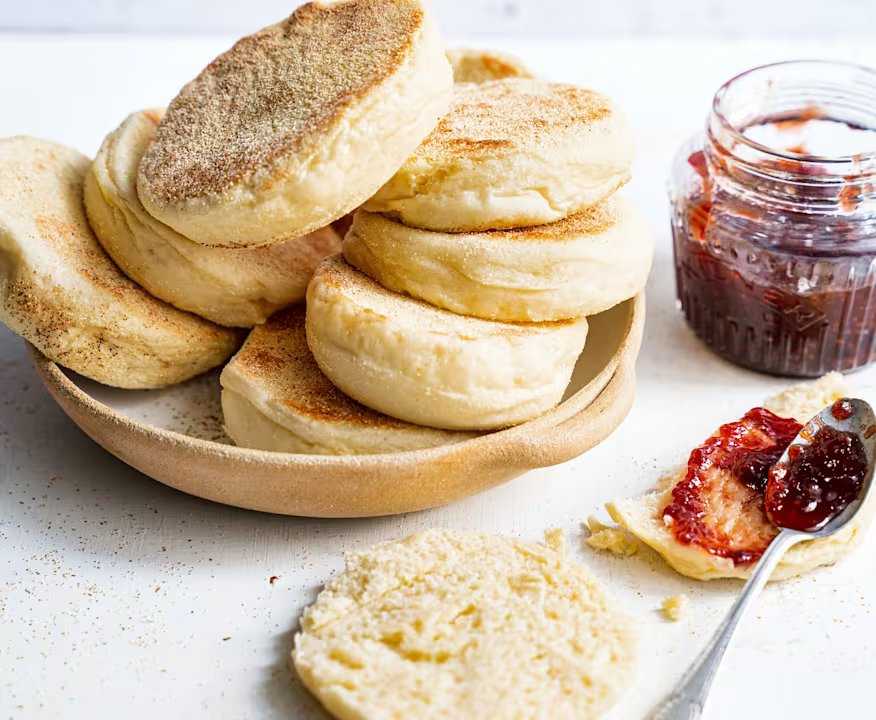

Muffins anglais
Ingrédients
10×
- 150 g d'eau minérale
- 150 g de lait
- 15 g de levure boulangère fraîche
- 430 g de farine T45
- 70 g de semoule fine
- 15 g de sucre
- 10 g de sel
- 20 g de beurre

Préparation
Étape 1
Mettre dans le bol 150 g d'eau minérale, 150 g de lait, 15 g de levure boulangère fraîche, 430 g de farine T45, 70 g de semoule fine (+ 2 cas pour plus tard), 15 g de sucre et 10 g de sel. Pétrir mode pétrin/5 min.
Étape 2
Ajouter 20 g de beurre et pétrir mode pétrin/3 min. Mettre dans un saladier fariné, couvrir et laisser lever 2h dans un endroit tiède.
Étape 3
Étaler sur un bon centimètre sur le plan fariné, saupoudrer des 2 cas de semoule restantes et détailler 10 disques de 9cm. Couvrir et laisser lever 1h.
Étape 4
Cuire à la poêle sans matière grasse, 5min de chaque côté.
Conseils
- En salé (oeuf, cheddar) ou sucré (beurre, confiture). Les passer au grille-pain coupés en deux.
Résumé
150 g d'eau minérale
150 g de lait
15 g de levure boulangère fraîche
430 g de farine T45
70 g de semoule fine
15 g de sucre
10 g de sel
Pétrir mode pétrin/5 min
20 g de beurre
pétrir mode pétrin/3 min laisser lever 2h
détailler laisser lever 1h
Cuire